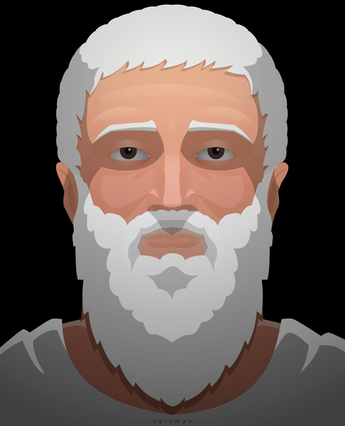

Platon

Los primeros años
Platón nació en Atenas, (o en Egina, según otros, siguiendo a Favorino), probablemente el año 428 o el 427 a. c. de familia perteneciente a la aristocracia ateniense, que se reclamaba descendiente de Solón por línea directa. Su verdadero nombre era Aristocles, aunque al parecer fue llamado Platón por la anchura de sus espaldas, según recoge Diógenes Laercio en su "Vida de los filósofos ilustres", anécdota que ha sido puesta en entredicho. Los padres de Platón fueron Aristón y Perictione, que tuvieron otros dos hijos, Adimanto y Glaucón, que aparecerán ambos como interlocutores de Sócrates en la República, y una hija, Potone.
A la muerte de su padre, siendo niño Platón, su madre contrajo nuevas nupcias con Pirilampo, amigo de Pericles, corriendo la educación de Platón a su cargo, por lo que se supone que Platón pudo haber recibido una enseñanza propia de las tradiciones democráticas del régimen de Pericles.
En todo caso, Platón recibió la educación propia de un joven ateniense bien situado, necesaria para dedicarse de lleno a la vida política, como correspondía a alguien de su posición. Según Diógenes Laercio llegó a escribir poemas y tragedias, aunque no podamos asegurarlo. También fue discípulo del heracliteano Cratilo, noticia esta que tampoco parece posible confirmar. La vocación política de Platón está constatada por sus propias declaraciones, en la conocida carta VII; pero su realización se vio frustrada por la participación de dos parientes suyos, Cármides y Crítias, en la tiranía impuesta por Esparta luego de la guerra del Peloponeso, conocida como la de los Treinta Tiranos, y que ejerció una represión violenta y encarnizada contra los líderes de la democracia. Sin embargo, el interés político no le abandonará nunca, y se verá reflejado en una de sus obras cumbre, la República.
La influencia de Sócrates
En el año 407, a la edad de veinte años, conoce a Sócrates, quedando admirado por la personalidad y el discurso de Sócrates, admiración que le acompañará toda la vida y que marcará el devenir filosófico de Platón. No parece probable que Platón mantuviera una relación muy intensa con el que consideró su maestro, si entendemos el término relación en su sentido más personal; sí es cierto que entendida en su sentido más teórico la hubo, y de una intensidad que raya en la dependencia. Pero también sobre su relación con Sócrates hay posiciones contradictorias. El que no estuviera presente en la muerte de Sócrates ha hecho pensar que no pertenecía al círculo íntimo de amigos de Sócrates; sin embargo, parece que sí se ofreció como aval de la multa que presumiblemente la Asamblea impondría a Sócrates, antes de que cambiara su decisión por la condena a muerte.
Primeros viajes
En el año 399, tras la muerte de Sócrates, Platón abandona Atenas y se instala en Megara, donde residía el filósofo Euclides que había fundado una escuela socrática en dicha ciudad. Posteriormente parece que realizó viajes por Egipto y estuvo en Cirene, (noticias ambas, aunque probables, difíciles de contrastar, no habiéndose referido Platón nunca a dichos viajes, por lo que también es probable que luego de una breve estancia en Megara regresara a Atenas ) yendo posteriormente a Italia en donde encontraría a Arquitas de Tarento, quien dirigía una sociedad pitagórica, y con quien trabó amistad.
Invitado a la corte de Dionisio I, en Siracusa, se hizo amigo de Dión, que era cuñado de Dionisio, y con quien concibió la idea de poner en marcha ciertas ideas políticas sobre el buen gobierno que requerían la colaboración de Dionisio. Al parecer, las condiciones de la corte no eran las mejores para emprender tales proyectos, ejerciendo Dionisio como tirano de Siracusa; irritado por la franqueza de Platón, según la tradición, le retuvo prisionero o lo hizo vender como esclavo en Egina, entonces enemiga de Atenas, siendo rescatado finalmente por un conciudadano que lo devolvió libre a Atenas.
La Academia
Una vez en Atenas, en el año 388-387, fundó la Academia, nombre que recibió por hallarse cerca del santuario dedicado al héroe Academos, especie de "Universidad" en la que se estudiaban todo tipo de ciencias, como las matemáticas (de la importancia que concedía Platón a los estudios matemáticos da cuenta la leyenda que rezaba en el frontispicio de la Academia: "que nadie entre aquí que no sepa matemáticas"), la astronomía, o la física, además de los otros saberes filosóficos y, al parecer, con una organización similar a la de las escuelas pitagóricas, lo que pudo comportar un cierto carácter secreto, o mistérico, de algunas de las doctrinas allí enseñadas. La Academia continuará ininterrumpidamente su actividad a lo largo de los siglos, pasando por distintas fases ideológicas, hasta que Justiniano decrete su cierre en el año 529 de nuestra era.
Últimos viajes
En el año 369 emprende un segundo viaje a Siracusa, invitado por Dión, esta vez a la corte de Dionisio II, hijo de Dionisio I, con el objetivo de hacerse cargo de su educación; pero los resultados no fueron mejores que con su padre; tras algunas dificultades (al parecer estaba en situación de semi-prisión) consigue abandonar Siracusa y regresar a Atenas. También Dión tuvo que refugiarse en Atenas habiéndose enemistado con Dionisio I, donde continuará la amistad con Platón. Unos años después, en el 361, y a petición de Dionisio II, vuelve a realizar un tercer viaje a Siracusa, fracasando igual que en las ocasiones anteriores, y regresando a Atenas en el año 360 donde continuó sus actividades en la Academia, siendo ganado progresivamente por la decepción y el pesimismo, lo que se refleja en sus últimas obras, hasta su muerte en el año 348-347.
La filosofía platónica
Platón es el primer gran filósofo ateniense que nos deja una amplia obra escrita. Discípulo del polémico Sócrates y creador de la Academia, que mantendrá su actividad hasta el s. VI de nuestra era, (el año 529 serán cerradas todas las escuelas filosóficas por orden de Justiniano), su pensamiento ejercerá una gran influencia en el desarrollo de la filosofía
Conclusiones
Platon pantio que todos los seres humanos somos libres y que para saber como es cada quien tenemos que conocernos, y para lograr esto, tenemos que tratar con las personas, en la actualidad esto se da una manera buena, pues al conocer a las personas puedes saber como es cada quien, pero si lo dejas a la ligera y jusgas antes de conocer, entonces no estas haciendo lo correcto ni pensando